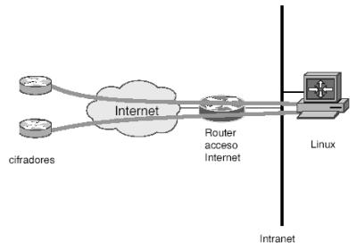

Como contrapartida, podemos diseñar una arquitectura en la que el PC terminador de túneles IPSec no sea más que otra máquina dentro de la red de servicios local. En este caso, el PC podría contar con tan sólo una interfaz de red conectada a la red local, por la que establecería los túneles IPSec y redireccionaría el tráfico al interior de la red, como si se tratase de una interfaz loopback.
De esta forma se aísla el servicio del resto, evitando afectar a todos los usuarios, y se facilita el montaje de la máquina, al no tener que realizar funciones extras a las mínimas requeridas. Es por ello que ésta es la arquitectura adoptada finalmente para el desarrollo del servicio, pese a que implica realizar un filtrado de los usuarios de la VPN por separado (en caso de que se desee dicho filtrado, por supuesto).
|

|